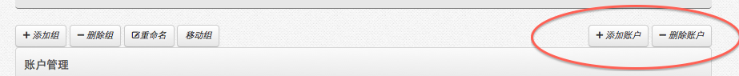
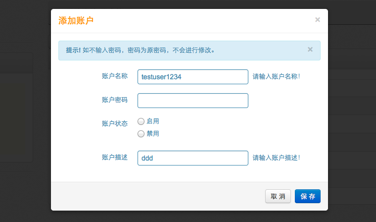

-
- 操作流程
- 点击首页功能菜单［系统维护－帐户管理］，打开帐户管理。
- 帐户是每个登陆本系统的帐号。帐户必须属于一个组（可以把帐户组理解为组织机构）。
- 帐户包括添加、删除、修改、启用（禁用）功能。
- 添加
-

- 要添加一个新帐户，首先要选择组，点击［添加帐户］按钮，弹出添加帐户框，输入帐户基本信息，点击保存按钮。
- 添加一个新帐户，帐户的默认登陆密码，是在系统配置－参数设置里设置的默认密码，管理员可以修改帐户密码，帐户登陆后，也可以自主修改。
- 删除
- 要删除一个帐户，首先要选择帐户，点击［删除帐户］按钮，确认删除。
- 删除一个帐户组，将不能再恢复，请谨慎操作。
- 修改
- 点击帐户的［修改］按钮，弹出修改帐户信息框，输入修改信息，点击保存按钮。
-

- 修改帐户时，如帐户的密码，如果不填写，就不修改密码，如果填写，则修改新密码。帐户状态是启用或禁用帐户，被禁用的帐户，将不能登陆系统。帐户描述没有实际意义，只作为帐户的信息显示。